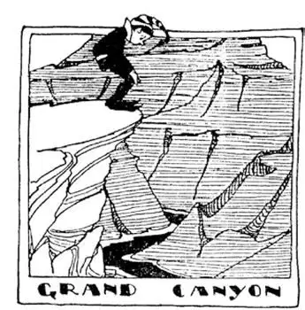
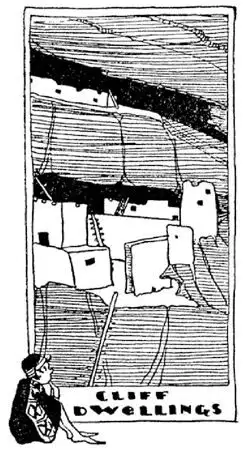

14
Wonderland
仙 境

“ALICE IN WONDERLAND” is a fairy-tale, but there is a real Wonderland out in the West. One of the wonders is a river. It is called the Colorado River, but it is not in the State of Colorado. It is in Arizona.
The river runs deep down in the bottom of the deepest ditch in the World, a ditch a mile deep in places. This ditch is called by the Spaniards a Canyon. You can stand on the edge of the Colorado Canyon and look almost a mile down to what seems a slender little thread of water—the Colorado River—running at the bottom, and yet this little stream has cut this ditch in which it runs—worn it down—all by itself. Here we can see, better than any place i.t.w.W., what the World looks like on the inside if we could dig down into it a mile deep, for here a little river has dug down a mile deep for us. I asked my guide how far it was across to the other side of the Canyon.

You can look almost a mile down
你可以往下看到1英里深处
“Oh,” he replied, “about ten or twelve shouts.” That was a new distance to me, for I didn’t even know how far one shout was. My arithmetic says twelve inches make a foot and three feet make a yard, but does not say how many feet make a “shout.” You can look across to the other side of the Canyon and see the opposite wall almost a mile high—not a plain, blank wall like the wall of a building, but more like the walls of heaven—layers of rock, pile upon pile, colored yellow, red, green, orange, purple, mixed with sunshine and shadow. All of this rock was once under the sea, for it is limestone and sandstone. Each layer has been dyed a different color by minerals like iron and copper; if there was iron in the water, it turned the rock the color of iron rust—red; if copper, it turned the rock green.
I once bought a souvenir pencil. In its end was a pinhole, and when you squinted into the hole with one eye, there you saw in all its vastness the Colorado Canyon. It seemed impossible, and yet there it was, stretching off in the distance, mile upon mile, in a picture the size of a pin head!
Some of the branches of the Colorado run in smaller canyons, and high up on the walls of these canyons are houses built in caves in the rock. Once upon a time, long, long ago, people whom we call “cliff-dwellers” built these homes there to be safe from their enemies.
A giant hop and skip north from the Grand Canyon would bring one to the State of Utah, where there is a great lake, but this Great Lake is different from the five “Great Lakes.” The water in the five Great Lakes is fresh, the water in this great lake is salt, so it is called Great Salt Lake, though it is really a little ocean. As in the case of the ocean, rivers run into the Great Salt Lake, but no rivers run out of it.
What makes it salt ?
The same thing that makes the ocean salt.
What makes the ocean salt?

cliff dwellings （悬崖住所）
The ground through which rivers flow is salt. If you ever tasted the ground, you would know it, but, of course, I don’t suppose you ever have, unless you have fallen and gotten some in your mouth or on your lips. Rivers, as they flow along, wash some of this salt out of the ground, carry it along, and dump it into the ocean. They carry so little salt at a time you would never know by tasting the river water that it was salt at all, but the rivers pour in this ever so little bit of salt all the time, all the time, and so the salt gradually does collect in the ocean and in Great Salt Lake, for there is no way for the salt to go out once it’s in the ocean or the lake. The water gets out of the lake as it does out of the ocean—by rising into the air as vapor—evaporating, we call it—but the salt doesn’t evaporate, it can’t rise into the air, and so it has no way of getting out.
The Great Salt Lake is getting saltier and saltier all the time. It is already much saltier than the ocean. Salt water holds up a person or anything in it much better than fresh water, and the saltier the water the more it holds the person up. So in Great Salt Lake you couldn’t drown whether you knew how to swim or not. You can stand in the water or sit in the water or lie down on the water as you would on a sofa. You can read the paper or eat your luncheon while sitting in the water, but you have to be very careful not to get any of the water in your eyes or in any small cut you may have on your hands or body, for the salt water is so strong it smarts. Some day the ocean will be as salty as Great Salt Lake, for the ocean too is slowly, very slowly, getting saltier and saltier all the time. Then, even if there were a shipwreck, people would not drown—they would bob about in the sea like corks.
Still farther north, a hop, skip, and a jump from the Colorado Canyon, in the corner of the State of Wyoming, is a place that looks on the map like a little State within the State. It is called Yellowstone Park. There are so many wonderful things in this part of the State—freaks, funny things, and lovely things—that the United States thought people would like to see them, so they made a Park of this corner of the State, with good roads and hotels, for people who wish to see the sights. No hunting is allowed, so wild animals and birds can live and raise families without fear of being killed. There are bears in Yellowstone Park, but as they are not allowed to be hunted or shot, they become very tame and people can even go close enough to photograph them.
The World in that part of the country has not yet cooled off altogether, and it is still very hot not far down under the ground. If a person asked me to have a glass of spring water, I should expect a nice cool drink; but if the spring were in Yellowstone Park the water would probably scald my throat, for there are hundreds of springs in Yellowstone Park heated so hot by underground fires that they boil up and over like a pot on the fire.
There is a big lake in Yellowstone Park called Yellowstone Lake. You can stand on its edge and catch a fish in the lake and, without taking the fish off the hook, drop it into one of the hot springs near shore and cook it. In other places the water is blown up by the steam underneath into fountains. These fountains are called “geysers,” and some are quite big and some are quite beautiful. One called “Old Faithful” spouts regularly about once every hour, throwing a beautiful stream of water straight up into the air like a gigantic fire-hose. It does this so faithfully that it seems almost as if a person turned the water on and off, but it has been spouting this way ever since it has been known—never missing an hour, night or day, never forgetting, never running down, more faithful than any human being would or could be.
【中文阅读】
“爱丽丝漫游仙境”是一个童话故事，但是远在西部真有一个充满奇迹的仙境。奇迹之一是一条河，叫做科罗拉多河，但它却不在科罗拉多州，而在亚利桑那州。
这条河流淌在世界上最深的水沟里的底部，这条多处深达1英里的水沟被西班牙人叫做峡谷。你可以站在科罗拉多峡谷的边缘向下看，大约1英里深的地方有一条细线一般的水——那就是科罗拉多河——流淌在峡谷底部，然而正是这条小溪流“挖出”了这个大峡谷——一点点慢慢冲刷——全靠它自己。在这里往下1英里我们能比在世界上任何地方都能更清楚地看到世界的内部是什么样子，因为这里的一条小河已经为我们挖了1英里深。我曾问过向导到峡谷 的另一边有多远。“哦，”他回答说，“大概十到十二声喊叫声那么远。”那是我从未听说过的距离，因为我甚至不知道一声喊叫有多远。我的算术课本上说1英尺等于12英寸，1码等于3英尺，但是却没有告诉我一声“喊叫声”有多少英尺。你可以朝峡谷的另一面望去，看见对面高达约1英里的岩壁——不是像建筑物的墙那样单调的一色，而是更像天堂的墙壁——它是由一层层岩石堆积起来的，岩石有黄、红、绿、橙、紫等多种颜色，在光和影的交替作用下这些颜色更是绚丽迷人，这里所有的岩石都曾经是在大海底下的，因为都是些石灰岩和砂岩。每一层都被诸如铁和铜之类的矿物染成了不同的颜色；如果水中的岩石含铁，它就会把岩石变成铁锈的颜色——红色；如果含铜，就会把岩石变成绿色。
我曾经买过一个旅游纪念品，是支铅笔。它的顶部有一个小孔，眯着一只眼往里看，你能看到整个宽广辽阔的科罗拉多大峡谷。这似乎不可能，但确实是真的，在一幅针孔般大小的图景里竟能看到绵延数英里的大峡谷！
科罗拉多河的一些支流在较小的峡谷中流淌，在这些峡谷岩壁的石洞里还有房屋。很久很久以前，我们称为“悬崖居民”的人为了躲避敌人建了这些房屋。
离大峡谷的北面不远处就是犹他州，那里有一个很大的湖，但是这个大湖不同于“五大湖”。五大湖的水是淡水，这个大湖里的水却是咸水，因此它被叫做“大盐湖”，其实它就是一个小海洋。大盐湖和海洋一样，只有流入的河，却没有流出的河。
是什么把湖水变咸的呢？
是把海洋也变咸的东西。
那么，是什么把海洋变咸的呢？
河水流经的土地含有盐分。如果你尝过泥土的味道你就会知道的，但是，我想你当然没尝过，除非你跌倒了，不小心嘴里或者嘴唇上沾了点土。河水流经土地时由于不断冲刷，带走了一些盐分，最后汇入海洋。河流一次带走的盐分很少，所以你尝河水是感觉不到咸味的，但是众多河流日复一日，年复一年地把盐分一点点带进海洋，海洋和大盐湖里的盐分就逐渐积累起来了，因为盐一旦进入海洋和大盐湖，就没有办法再出去。湖水和海水都是变成水蒸气升到空气中——我们称之为蒸发——但是盐是不能蒸发的，它不能升到空气中去，因此它没有任何办法出去。
大盐湖不断变得越来越咸。它已经比海水还咸。人和一些东西能在水里浮起来，盐水比淡水浮力更大，水越咸，浮力就越大。所以，在大盐湖不管会不 会游泳你都不会溺水。你可以站在水里、坐在水里或者躺在水面上，就像躺在沙发上一样。你可以一边坐在水里，一边看报纸或者吃午餐，但是你得小心别把水弄到眼睛里或者手上或身上任何小伤口里，因为盐分很强会引起剧痛。有一天海洋也会变得像大盐湖一样咸，因为海洋也在一直非常缓慢地变得越来越咸。到那时，即使发生船只失事，也不会有人遇难了——人们会像软木塞一样在海上漂来漂去。
从科罗拉多大峡谷再往北不远处是怀俄明州，在怀俄明州的西北角有块地方，在地图上看起来就像是“州中之州”。这个地方叫黄石公园。这里有很多奇妙的东西——有的奇形怪状，有的滑稽可笑，有的美丽迷人——有这么好的地方所以美国政府认为人们都想来观赏一下，于是就在怀俄明州的西北角建了这个公园，这里公路宽敞，酒店舒适，非常便于前来旅游的人。这里禁止捕猎，因此野生动物和鸟类可以自由地繁衍生息，不用担惊受怕。黄石公园里有熊，但是没有人捕猎或射杀，它们就变得非常温顺，游客可以靠近它们拍照。
世界在美国的那块地方还没有完全冷却下来，在地下不深的地方仍然很热。如果有人请我喝一杯泉水，我期待喝上清凉可口的水；但是喝了黄石公园的泉水，很可能会烫伤我的喉咙，因为在黄石公园有许许多多的温泉被地下熔岩加热至沸腾溢出，就像是火上烧开的水壶一样。
黄石公园里有个大湖叫做黄石湖。你可以站在湖边钓一条鱼，然后不用把它从鱼钩上取下来就直接丢到湖岸附近的一个热泉里把它给煮熟了。在其他地方，由于地下蒸汽的压力泉水会喷出来形成喷泉。这种喷泉叫做“间歇泉”，有的间歇泉非常壮观，有的非常美丽。一个叫做“老实泉”的间歇泉很规律地大约每隔一小时就喷射一次，此刻一条美丽的水柱直入空中，就像从一个巨大的消防水带里喷射出来一样。它每次喷射都是这么尽职守信，就好像有个人看着时间开关水龙头一样，但它自从被人所知就一直这样喷射——日日夜夜从未漏过一个小时，从未忘记，从未停止，我们人类没有人愿意或能够做到像它那样忠实守信。